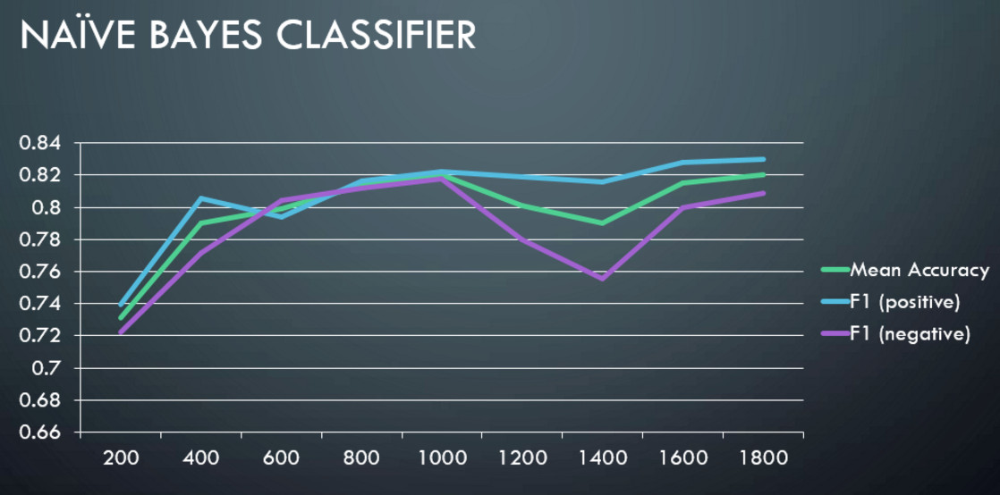

The was aimed to predict the polarity (positive/negative) of a given text data using machine learning and natural language techniques. The sentiment analysis was applied to a movie review dataset.
Dataset Size: 2000 records (1000 of each polarity - positive and negative)
Testing and Cross validation: 10-30% of the entire dataset
Bigram Frequencies, takes in account only adjacent pair of words. Relationship between words further apart in the sentence is unaccounted for in this model.
The following graphs show mean accuracy, F1 score of positive and negative classes vs training set size.
